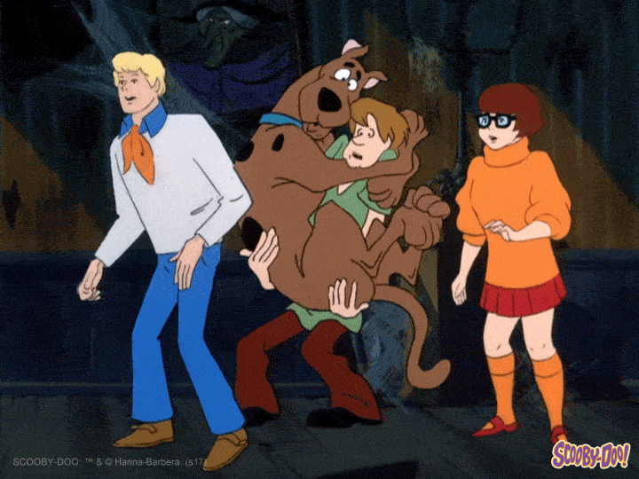
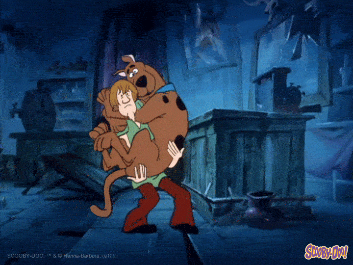
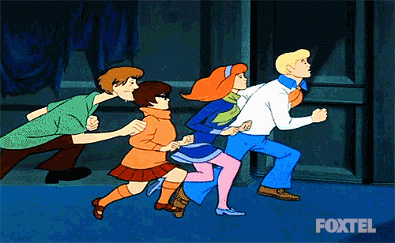
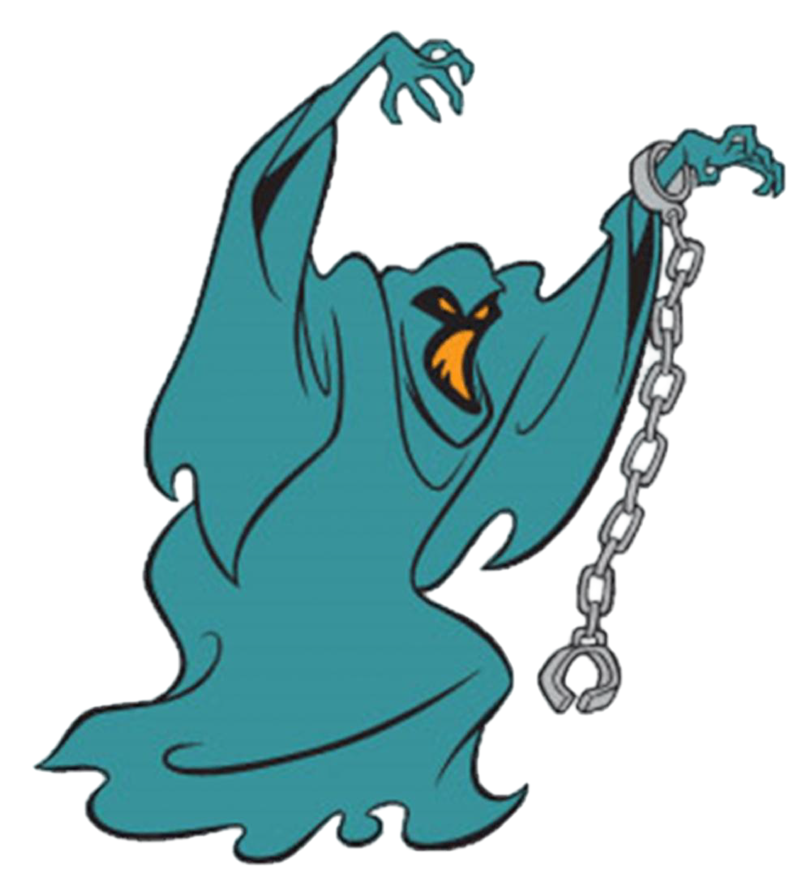
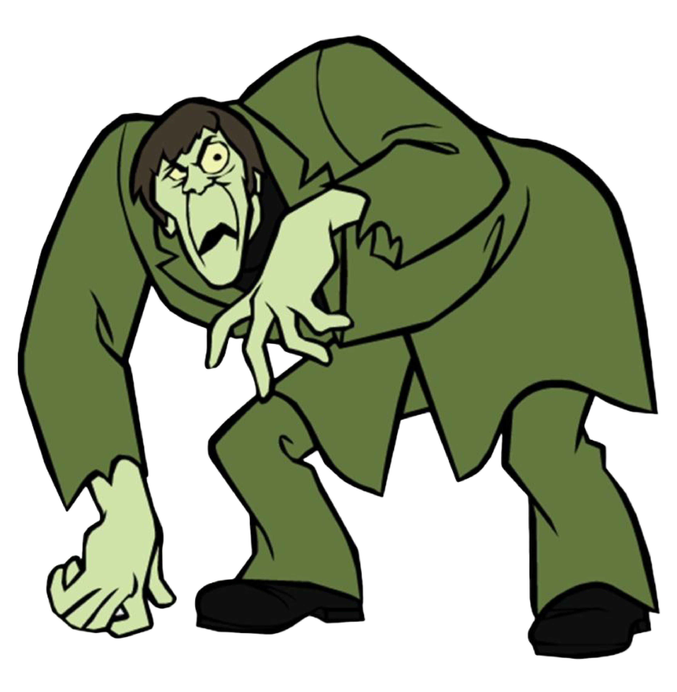

Hover over the gang... if you dare.





I asked ChatGPT to help me extend my JavaScript interaction. I already had a button that changed the message, and AI helped me add changes to the background, text color, button color, and button text. The code worked after I tested the interaction. I understand that the event listener waits for the button to be clicked and then runs the function that changes the page. I could modify the colors, text, and basic interaction myself, but I would use AI for help with more advanced JavaScript.I will try to extend what i learned with Ai.